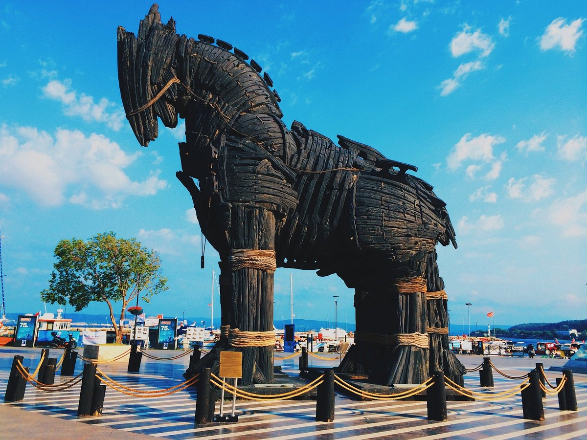

Truva atı, Odysseus'un Truva surlarını aşmak ve şehre gizlice girmek için yaptırdığı tahtadan at maketidir. Savaş yaklaşık 10 yıldır sürmektedir. Askerler bıkkın ve yorgundur. Zekası sayesinde Athena tarafından da sevilen Odysseus'un aklına tahtadan bir at yapma fikri gelir. Plana göre Akhalılar savaştan çekiliyor gibi gözüküp, geride çok büyük bir tahta at bırakırlar. Odysseus ve diğer seçkin komutanlar atın içine gizlenirken, diğerleri denize açılıp gemileri Bozcaada'nın arkasına, Troyalıların onları göremeyeceği bir şekilde gizlerler. Planın yürümesi için, görevi tahta atın Truvanın surlarından içeri girmesini sağlamak olan bir Akhalı askeri atın yanında bırakırlar. Akhalıların çekildiğini gören Truvalılar, şaşkınlık içinde batı kapısının önündeki dev tahta atın yanına giderler. Bu sırada ortaya çıkan Sinon ismindeki Akhalı asker, Yunanlardan nefret ettiğini, onu Akhalıların geri dönüşleri için gerekli rüzgarın çıkması adına kurban seçtiklerini ve kendisinin kaçarak kurtulduğunu söyler.
Tahta at Tanrıça Athena'ya kutsal bir sunak olarak yapılmıştır. Büyük olmasının sebebi Troyalıların onu dar şehir kapılarından şehrin içine almalarını engellemek içindir. Akhaların beklentisi Troyalıların bu atı yakıp yıkmalarıdır. Böylece Tanrıça Athena'nın öfkesini Troya üzerine çekmiş olacaklardır. Ama Troyalılar atı şehrin içine alıp onu korurlarsa Athena'nın lütfu Troyalılara yönelecektir.
Akhalı askerin sözlerine inanan ve barışmak isteyen Truvalılar bu sözlere inanırlar ve tahta atı içeri alırlar. Gece barış kutlamalarıyla eğlenen ve alkolün etkisiyle sızan Truvalılar, atın içindeki Akhalı Savaşçılar tarafından avlanır. Bu sırada Truva'nın surlarına yaklaşmış olan Akhalı Ordusunun da takviyesiyle Truva Şehri tamamen yıkılır. Truva'nın baştan sona yakıldığı bu katliam sonrasında Menelous Helen'i alarak Yunanistan'a yelken açar.
Truva atının gerçekten var olup olmadığı bilinmemektedir. Homeros tarafından anlatılan öyküde geçmekle birlikte, bunun bir metafor olduğunu düşünen tarihçiler de bulunmaktadır. Bu tarihçilere göre, Truva atı gerçekten inşa edilmemiştir ve ancak deprem tanrısı da olan Poseidon'un simgesi olan atın, depremle yıkılan Truva surlarından içeri girme olayının metafor olarak Homeros tarafından kullanıldığı düşünülmektedir.
